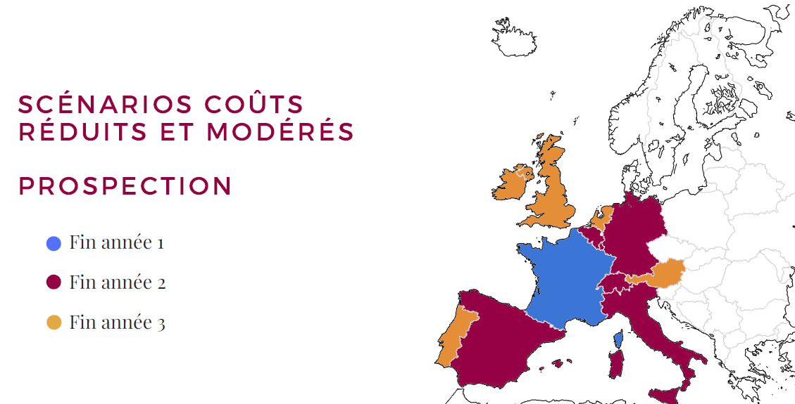
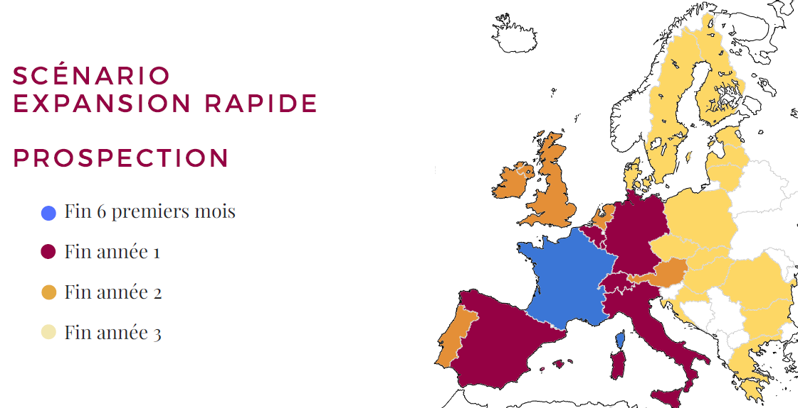

Chapter 2 Business plans
There are 3 business plans available. They are on 3 years. The first one is for little costs, the second one is for moderate costs and the last one is for a quick expansion in Europe.
The three cases of common points. They are:
Company structure: SAS
No salary in the first year, hence the need for partners
Same target cities for starting, prospecting and setting up partnerships during the first 6 months
Contribution of 15,000 euros
20,000€ acquired from an investor
Launch at month 6

For the case of little costs:
3 partners at the beginning: Founder, Community Manager, Engineer developer
Design of the application, site and internal maintenance
No purchase of computers (personal computers)
No recruitment
Year 3: Loft rental
For the case of moderate costs:
2 partners at the beginning: Founder, Community Manager
External design and maintenance (application: 18 000€, site: 18 000€, maintenance: 4500€)
Year 1: Loan of 25 000€
Year 2: Recruitment engineer developer, rental of a loft, purchase
3 computers (3 000€)
Year 3: Recruitment of a prospecting agent
For the case of quick expansion in Europe:

2 associés au départ : Fondatrice, Community Manager
Conception et maintenance externe (application: 18 000€, site: 18 000€, maintenance 4500€; HT)
Année 1 : Prêt de 25 000€
Année 2 : Location d’un loft, achat de 4 ordinateurs (4 000€), recrutement d’un ingénieur développeur et d’un agent de prospection internationale
Année 3 : achat de 2 ordinateurs (2 000€), recrutement de 2 agents de prospection internationale
Some hypothesis have been done. One of these is 70% of research generates money and each user do 3 searches per week. Another one is the advertising banner in the application generates 0.13€ for 1000 views.
To be profitable at the end of the first year, 30000 users are needed for the little costs case. For the two others, 55000 are needed.
At the end of the third year, 40000 are needed for the little costs case, 64000 for the moderate costs one and 85000 for the quick expansion one.
This seems realistic according to the number of people living to the cities where the application will be used. Indeed, it represents a little proportion of them.
In order to know if the project is realistic, a market study has been done. In the next part, it will be introduced.